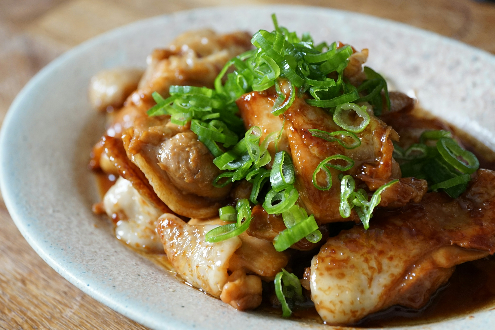

Chicken Adobo

Description
Chicken Adobo is a popular Filipino dish made with chicken marinated in a mixture of soy sauce, vinegar, garlic, and spices.
It is then simmered until tender, resulting in a flavorful and aromatic dish that is often served with steamed rice.
Ingredients
- 2 lbs chicken thighs
- 1/2 cup soy sauce
- 1/4 cup vinegar
- 4 cloves garlic, minced
- 1 bay leaf
- 1/2 teaspoon black peppercorns
- 1 cup water
- 2 tablespoons cooking oil
Steps
- In a bowl, combine soy sauce, vinegar, garlic, bay leaf, and black peppercorns. Add the chicken and marinate for at least 30 minutes.
- Heat cooking oil in a large skillet over medium heat. Remove the chicken from the marinade and brown on all sides.
- Add the marinade and water to the skillet. Bring to a boil, then reduce heat to low and simmer for 30-40 minutes until the chicken is cooked through.
- Serve hot with steamed rice.
Back to Odin Recipes